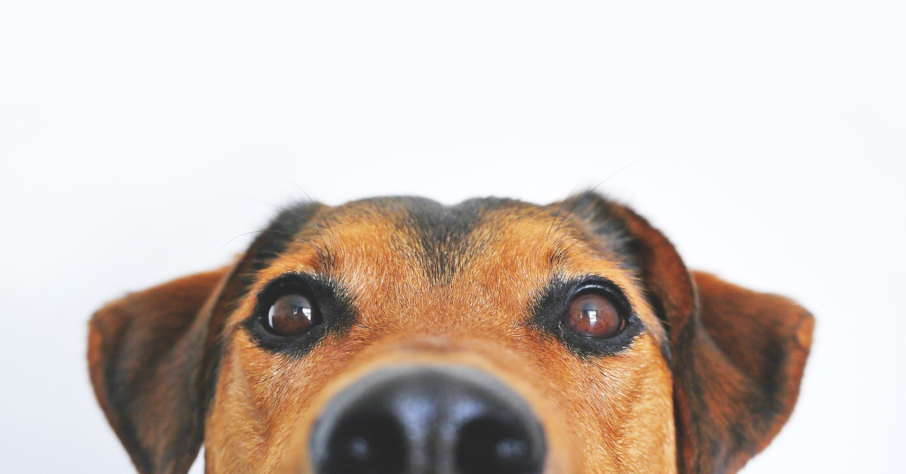

Three Most adored dog breeds
Are you ready to see the three (3) most adored dog breeds in the world? The list of dog breeds go on and on and on but these three (3) are the most cutest and pet-friendly dog breeds!
#01
Corgi
The Pembroke Welsh Corgi is a cattle herding dog breed that originated in Pembrokeshire, Wales. It is one of two breeds known as a Welsh Corgi. Pembroke Welsh Corgis descended from the Spitz family of dogs.
#02
Siberian Husky
The Siberian Husky is a medium-sized working sled dog breed. The breed belongs to the Spitz genetic family. It is recognizable by its thickly furred double coat, erect triangular ears, and distinctive markings, and is smaller than the similar-looking Alaskan Malamute.
#03
Yorkshire Terrier
The Yorkshire Terrier is one of the smallest dog breeds of the terrier type and indeed of any dog breed. The breed developed during the 19th century in Yorkshire, England. Ideally its maximum size is 7 pounds.
corgi
Among the most agreeable of all small housedogs, the Pembroke Welsh Corgi is a strong, athletic, and lively little herder who is affectionate and companionable without being needy. They are one the world's most popular herding breeds. At 10 to 12 inches at the shoulder and 27 to 30 pounds, a well-built male Pembroke presents a big dog in a small package. Short but powerful legs, muscular thighs, and a deep chest equip him for a hard day's work. Built long and low, Pembrokes are surprisingly quick and agile. They can be red, sable, fawn, and black and tan, with or without white markings. The Pembroke is a bright, sensitive dog who enjoys play with his human family and responds well to training.
Siberian Husky, a thickly coated, compact sled dog of medium size and great endurance, was developed to work in packs, pulling light loads at moderate speeds over vast frozen expanses. Sibes are friendly, fastidious, and dignified. The graceful, medium-sized Siberian Husky's almond-shaped eyes can be either brown or blue'¿and sometimes one of each'¿and convey a keen but amiable and even mischievous expression. Quick and nimble-footed, Siberians are known for their powerful but seemingly effortless gait. Tipping the scales at no more than 60 pounds, they are noticeably smaller and lighter than their burly cousin, the Alaskan Malamute. As born pack dogs, they enjoy family life and get on well with other dogs.
Beneath the dainty, glossy, floor-length coat of a Yorkshire Terrier beats the heart of a feisty, old-time terrier. Yorkies earned their living as ratters in mines and mills long before they became the beribboned lapdogs of Victorian ladies. The Yorkshire Terrier is a compact, toy-size terrier of no more than seven pounds whose crowning glory is a floor-length, silky coat of steel blue and a rich golden tan. Don't let the Yorkie's daintiness fool you. Tenacious, feisty, brave, and sometimes bossy, the Yorkie exhibits all the traits of a true terrier. Often named the most popular dog breed in various American cities, Yorkies pack lots of big-town attitude into a small but self-important package. They are favorites of urbanites the world over.
SO, HAVE YOu found your
True Friend?

CONTACT FOR MORe INFORMATION
location
OB MONTESSORI CENTER INC.